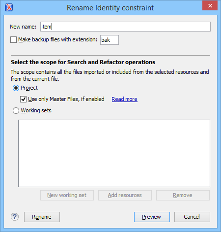

Searching and Refactoring Operations in WSDL Documents
Search Actions
The following search actions are available from the Search submenu in the contextual menu of the current editor or from the menu:
 Search References
Search References- Searches all references of the item found at current cursor position in the defined scope, if any. If a scope is defined, but the currently edited resource is not part of the range of resources determined by this, a warning dialog box is displayed and you have the possibility to define another search scope.
- Search References in
- Searches all references of the item found at current cursor position in the file or files that you specify when define a scope in the Search References dialog box.
 Search Declarations
Search Declarations- Searches all declarations of the item found at current cursor position in the defined scope if any. If a scope is defined, but the currently edited resource is not part of the range of resources determined by this, a warning dialog box will be displayed and you have the possibility to define another search scope.
- Search Declarations in
- Searches all declarations of the item found at current cursor position in the file or files that you specify when you define a scope for the search operation.
 Search Occurrences in File
Search Occurrences in File- Searches all occurrences of the item at the cursor position in the currently edited file.
The following action is available from the menu:
 Go to
Definition
Go to
Definition- Takes you to the location of the definition of the current item.Note: You can also use the Ctrl + Single-Click (Command + Single-Click on OS X) shortcut on a reference to display its definition.
Refactoring Actions
The following refactoring actions are available from the Refactoring submenu from the menu or in the contextual menu of the current editor:
- Rename Component
- Allows you to rename the current component (in-place). The component and all its references in the document are highlighted with a thin border and the changes you make to the component at the cursor position are updated in real time to all occurrences of the component. To exit the in-place editing, press the Esc or Enter key on your keyboard.
 Rename Component in
Rename Component in-
Opens a dialog box that allows you to rename the selected component by specifying the new component name and the files to be affected by the modification. If you click the Preview button, you can view the files to be affected by the action.
Figure 1. Rename Identity Constraint Dialog Box 